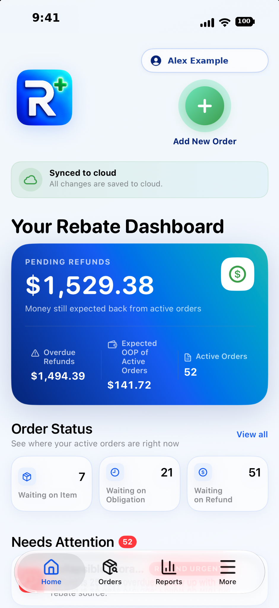
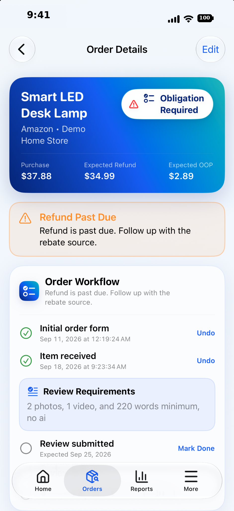
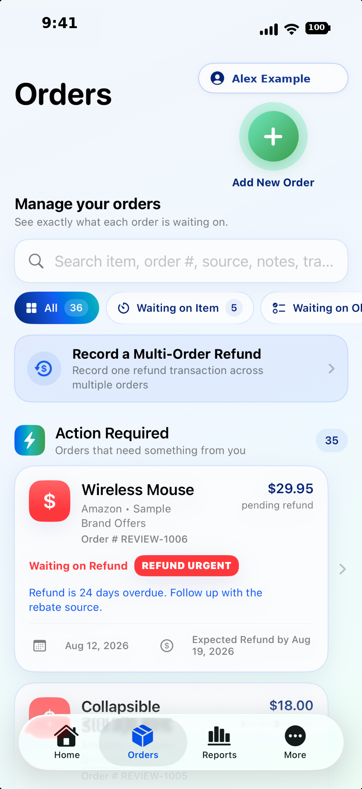
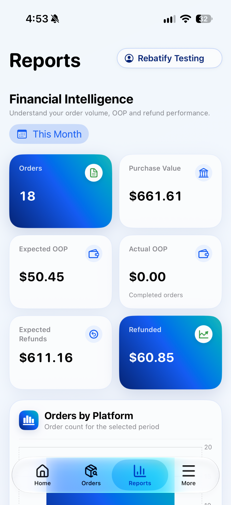
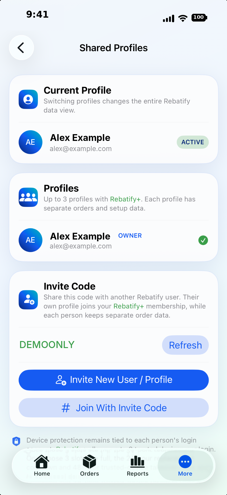

$
Pending refund dashboard
See money still expected from active orders, overdue refund amounts, expected OOP for active orders, and active order count from the Home dashboard.
Rebatify gives rebate shoppers one organized place to follow every purchase from the day it is ordered through delivery, required obligations, refund tracking, order completion, follow up, and an order archive list.


Rebatify tracks the full lifecycle of a rebate purchase—including the steps that have to happen before a refund is ready, the financial result after the refund arrives, and the history after the order is complete.
See money still expected from active orders, overdue refund amounts, expected OOP for active orders, and active order count from the Home dashboard.
Track order placement, item receipt, required group/forms, review or rating obligations, review-live status, and refund completion independently.
Record multiple refund transactions over time. A partial refund can remain open for more money or, once the workflow is complete, be closed with the unrecovered amount preserved in history.
Record one received refund across multiple orders. Rebatify compares the selected orders' outstanding refunds and automatically allocates the actual received amount proportionally, reconciled to the cent.
Surface orders that need attention—such as delivery steps, obligation work, review checks, or refunds that are reaching or passing their expected date.
Search by item, order number, source, or seller and filter active orders by Waiting on Item, Waiting on Obligation, or Waiting on Refund.
Changes save on the device first, then synchronize to cloud storage when available. If connectivity is interrupted, local changes remain saved and upload automatically later.
Orders automatically archive only after every applicable workflow step is complete and the refund requirement is satisfied—or the user has approved completion with a partial refund.
Maintain sources such as Groups, Individuals, Companies, and Third-Party Websites without forcing one source-level refund workflow onto every order.
Keep Shopping/Ordering Accounts organized so new orders can be associated with the correct account and later analyzed by account in Rebatify+ reports.
Maintain refund destinations and supported methods such as PayPal, Venmo, Cash App, Zelle, bank transfer, eCheck, check, original payment method, and other methods.
Replay a guided tour with temporary sample orders to learn the purchase-to-refund workflow without changing your real account information.
| Feature | 14-Day Basic-Access Trial | Rebatify+ |
|---|---|---|
| Order tracking, workflows, refunds, grouped refunds, archive | ✓ IncludedIncluded during trial | ✓ Included |
| Cloud sync & local-first saving | ✓ Included | ✓ Included |
| Secure account & trusted-device protection | ✓ Included | ✓ IncludedStandard feature — not Plus-only |
| Advanced reporting / Financial Intelligence | ✕ Not includedLocked during trial | ✓ Included |
| Workflow reminders & notification controls | ✕ Not includedLocked during trial | ✓ Included |
| Shared membership / switchable profiles | 1 1 user | ✓ Up to 3 users |
| Basic CSV after trial lockout | ✓ Available | ✓ Available |
| Continued full app access after trial | ✕ Not includedTrial access ends after 14 days | ✓ Included |
These are simulated Rebatify screens using sample data, styled to match the current v7.01 app interface and feature structure.
Pending refunds, overdue money, active-order OOP, status counts, items needing attention, and recent orders.

Search, workflow filters, action-required items, in-progress orders, ready-to-archive items, and Group Refund access.
Workflow steps and financials stay together, including expected vs. actual OOP, refund transactions, and partial-refund completion.

Advanced metrics and report library for OOP, refund aging, source performance, shopping accounts, and refund methods.

Up to three users share one membership while each person retains separate Rebatify data and independent device protection.
Rebatify intentionally does not calculate tied-up cash as purchase total minus refunds. It is the remaining expected refund on active orders. Expected OOP is excluded. If you complete an order with a partial refund, that remaining unrecovered shortfall is preserved as the final outcome but no longer counts as pending cash.
Each login maintains one primary device. Access may temporarily move to one new device within a 24-hour period; the primary device can return immediately. If the new device stays active for 48 continuous hours, it becomes the new primary device. These protections apply separately to every user in a shared Rebatify+ membership.